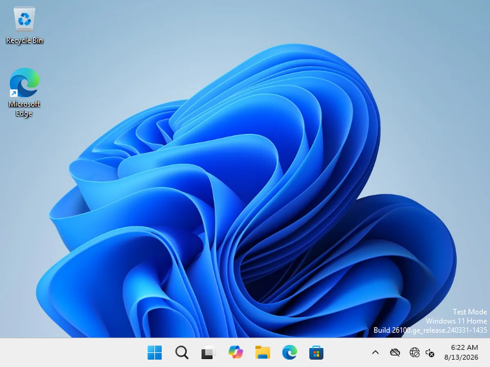

Windows 11 Arm ISO
Install Windows
Bring your own licensed ISO and about 64 GiB of free disk space. BridgeVM can download and verify the signed storage, serial and network drivers when you choose automatic driver setup.
Windows setup requirementsGeneral Preview v0.1.0
Run Windows 11 Arm alongside macOS in an open-source app built for Apple silicon. BridgeVM uses its own Hypervisor.framework virtual machine monitor.
Apple silicon · macOS 15+ to run a VM · M4/M5 tested · 3D-off

Open BridgeVM and choose the setup that matches your files. The installation guide covers the terminal installer, the DMG and the first-open steps.
Windows 11 Arm ISO
Bring your own licensed ISO and about 64 GiB of free disk space. BridgeVM can download and verify the signed storage, serial and network drivers when you choose automatic driver setup.
Windows setup requirementsRAW, QCOW2 or Hyper-V VHDX
Bring a disk with Windows 11 Arm already installed. Choose the installed-disk import in BridgeVM. This setup skips the installer driver payload.
Import requirementsThe preview focuses on running an installed Windows 11 Arm desktop and moving everyday work between the guest and your Mac.
Use a native Mac window, keyboard and mouse. Guest display drivers enable window-following resolution after a restart.
Share a folder or copy and paste between macOS and Windows with guest integration enabled.
Keep files on a persistent disk and take a powered-off snapshot before making changes.
Engineering Preview
General Preview v0.1.0 is available now. The app is ad-hoc signed, not notarized. The installation guide covers first open and download verification.
Read known limitations3D acceleration is excluded from General Preview and v1. Vulkan and D3D11 work continues in the experimental Graphics Lab.
Distribution channelsIn retained hardware runs, the 3D-off display was choppy and guest audio stuttered. Clean-Mac evidence for ISO installation and installed-disk import remains open.
Automatic setup verifies the roughly 95 MB signed Red Hat virtio-win payload against a pinned SHA-256. You can also provide your own signed ARM64 drivers and checksum manifest. BridgeVM does not redistribute these drivers or enable Windows TESTSIGNING.
Runs an installed Windows 11 Arm desktop on BridgeVM's own Hypervisor.framework VMM with persistent storage, display/input, network, audio, clipboard and folder integration, TPM/Secure Boot workflows, snapshots and window Coherence verbs. 3D acceleration is excluded from General Preview and v1; release-blocking evidence remains open and known defects are disclosed below.
Build from source Capability registryGeneral Preview for Apple silicon Macs running macOS 15 or later.